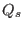
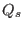
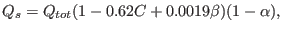
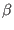
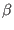

Next: Working with observed data Up: Air-Sea interaction Previous: Heat and momentum fluxes Contents
INTERFACE:
function short_wave_radiation(jul,secs,dlon,dlat,cloud,bio_albedo) result(swr)DESCRIPTION:
This subroutine calculates the short-wave net radiation based on
latitude, longitude, time, fractional cloud cover and albedo.
The albedo monthly values from Payne (1972) are given here
as means of the values between
at 30 N and 40
N and 40 N for the Atlantic Ocean
(hence the same latitudinal band of the Mediterranean Sea).
The basic formula for the short-wave radiation at the surface, ,
has been taken from Rosati and Miyakoda (1988), who adapted the work
of Reed (1977) and Simpson and Paulson (1999):
N for the Atlantic Ocean
(hence the same latitudinal band of the Mediterranean Sea).
The basic formula for the short-wave radiation at the surface, ,
has been taken from Rosati and Miyakoda (1988), who adapted the work
of Reed (1977) and Simpson and Paulson (1999):
|  | (232) |
with the total radiation reaching the surface under clear skies,
 , the fractional cloud cover,
, the fractional cloud cover,  , the solar noon altitude,
, and the albedo,
, the solar noon altitude,
, and the albedo,  .
This piece of code has been taken the MOM-I (Modular Ocean Model)
version at the INGV (Istituto Nazionale di Geofisica e Vulcanologia,
see http://www.bo.ingv.it/).
.
This piece of code has been taken the MOM-I (Modular Ocean Model)
version at the INGV (Istituto Nazionale di Geofisica e Vulcanologia,
see http://www.bo.ingv.it/).
USES:
use time, only: calendar_date IMPLICIT NONEINPUT PARAMETERS:
integer, intent(in) :: jul,secs REALTYPE, intent(in) :: dlon,dlat REALTYPE, intent(in) :: cloud REALTYPE, intent(in) :: bio_albedoOUTPUT PARAMETERS:
REALTYPE :: swrREVISION HISTORY:
Original author(s): Karsten Bolding & Hans BurchardLOCAL VARIABLES:
REALTYPE, parameter :: pi=3.14159265358979323846
REALTYPE, parameter :: deg2rad=pi/180.
REALTYPE, parameter :: rad2deg=180./pi
REALTYPE, parameter :: solar=1350.
REALTYPE, parameter :: eclips=23.439*deg2rad
REALTYPE, parameter :: tau=0.7
REALTYPE, parameter :: aozone=0.09
REALTYPE :: th0,th02,th03,sundec
REALTYPE :: thsun,coszen,zen,dzen,sunbet
REALTYPE :: qatten,qzer,qdir,qdiff,qtot,qshort
REALTYPE :: albedo
integer :: jab
integer :: yy,mm,dd
REALTYPE :: yrdays,days,hour,tjul
REALTYPE :: rlon,rlat
integer, parameter :: yday(12) = &
(/ 0,31,59,90,120,151,181,212,243,273,304,334 /)
REALTYPE, parameter :: alb1(20) = &
(/.719,.656,.603,.480,.385,.300,.250,.193,.164, &
.131,.103,.084,.071,.061,.054,.039,.036,.032,.031,.030 /)
REALTYPE, parameter :: za(20) = &
(/90.,88.,86.,84.,82.,80.,78.,76.,74.,70., &
66.,62.,58.,54.,50.,40.,30.,20.,10.,0.0 /)
REALTYPE :: dza(19)
data dza/8*2.0, 6*4.0, 5*10.0/